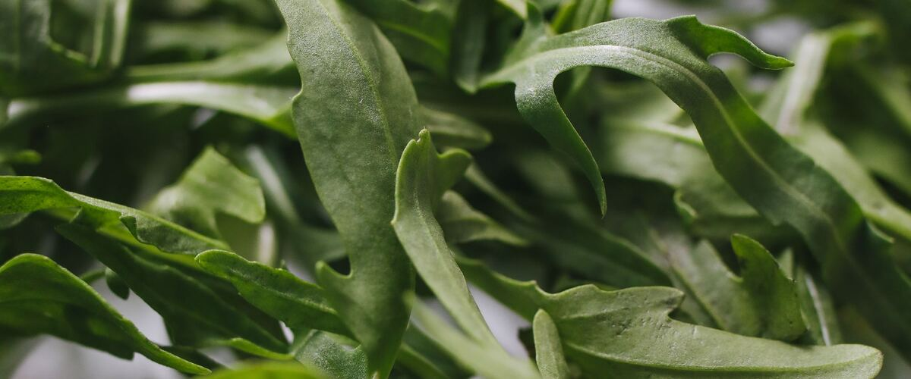

When to plant arugula in Oregon and Washington
In Portland and Seattle: Plant arugula from seed, directly in the garden, Mar 1 – Apr 12. For a fall harvest, plant again Aug 27 – Sep 17. In Spokane: Apr 1 – May 13. In Bend: Apr 28 – Jun 9. Find your city below.
- Difficulty
- Easy
- Sun
- Full sun to part shade
- Spacing
- Thin to 4 inches apart
- Planting depth
- ¼ inch deep
- Frost
- Handles light frost
- First harvest
- About 35 days after planting
Fast and frost-tolerant. It bolts in heat, so sow small batches in spring and again in late summer.
Arugula planting dates
Mar 1 – Apr 12 Plant in the garden
Aug 27 – Sep 17 Plant again for fall
Full planting calendar for Portland, OR →See every town (71)
Portland area, OR 6 towns
| Towns | Plant in the garden | Plant again for fall |
|---|---|---|
| Gresham, OR, Oregon City and West Linn, OR, Portland, OR, St. Helens and Scappoose, OR, Wilsonville and Canby, OR | Mar 1 – Apr 12 | Aug 27 – Sep 17 |
| Hillsboro and Beaverton, OR | Mar 5 – Apr 16 | Aug 27 – Sep 17 |
Willamette Valley, OR 5 towns
| Towns | Plant in the garden | Plant again for fall |
|---|---|---|
| Corvallis and Albany, OR, Eugene, OR, Salem, OR | Mar 1 – Apr 12 | Aug 27 – Sep 17 |
| Cottage Grove, OR | Mar 13 – Apr 24 | Aug 27 – Sep 17 |
| McMinnville and Newberg, OR | Mar 4 – Apr 15 | Aug 27 – Sep 17 |
Southern Oregon, OR 4 towns
| Towns | Plant in the garden | Plant again for fall |
|---|---|---|
| Ashland and Talent, OR | Mar 25 – May 6 | Aug 20 – Sep 10 |
| Grants Pass, OR, Medford, OR, Roseburg, OR | Mar 1 – Apr 12 | Aug 27 – Sep 17 |
Oregon Coast, OR 5 towns
| Towns | Plant in the garden | Plant again for fall |
|---|---|---|
| Astoria, OR, Brookings and Gold Beach, OR, Coos Bay and North Bend, OR, Newport and Lincoln City, OR, Tillamook, OR | Mar 25 – May 6 | Aug 27 – Sep 17 |
Central Oregon and the high desert, OR 6 towns
| Towns | Plant in the garden | Plant again for fall |
|---|---|---|
| Bend and Redmond, OR | Apr 28 – Jun 9 | Jul 27 – Aug 17 |
| Burns, OR | Apr 30 – Jun 11 | Jul 19 – Aug 9 |
| Klamath Falls, OR | Apr 28 – Jun 9 | Jul 31 – Aug 21 |
| Lakeview, OR | Apr 23 – Jun 4 | Jul 30 – Aug 20 |
| Madras, OR | Apr 20 – Jun 1 | Aug 16 – Sep 6 |
| Prineville, OR | Apr 20 – Jun 1 | Aug 4–25 |
Columbia Gorge and eastern Oregon, OR 9 towns
| Towns | Plant in the garden | Plant again for fall |
|---|---|---|
| Baker City, OR | Apr 20 – Jun 1 | Jul 28 – Aug 18 |
| Enterprise and Joseph, OR | Apr 20 – Jun 1 | Aug 13 – Sep 3 |
| Hermiston, OR | Mar 20 – May 1 | Aug 22 – Sep 12 |
| Hood River, OR | Mar 20 – May 1 | Aug 25 – Sep 15 |
| John Day, OR | Apr 20 – Jun 1 | Jul 31 – Aug 21 |
| La Grande, OR | Apr 1 – May 13 | Aug 13 – Sep 3 |
| Ontario, OR | Mar 20 – May 1 | Aug 26 – Sep 16 |
| Pendleton, OR, The Dalles, OR | Mar 20 – May 1 | Aug 27 – Sep 17 |
Seattle and Puget Sound, WA 6 towns
| Towns | Plant in the garden | Plant again for fall |
|---|---|---|
| Bremerton and Port Orchard, WA, Everett, WA, Kent, Renton and Auburn, WA, Seattle and Tacoma, WA | Mar 1 – Apr 12 | Aug 27 – Sep 17 |
| Olympia, WA | Mar 18 – Apr 29 | Aug 26 – Sep 16 |
| Shelton, WA | Mar 16 – Apr 27 | Aug 27 – Sep 17 |
North Sound and the islands, WA 5 towns
| Towns | Plant in the garden | Plant again for fall |
|---|---|---|
| Anacortes, WA, Bellingham, WA, Friday Harbor and the San Juans, WA, Mount Vernon and Burlington, WA, Oak Harbor and Whidbey Island, WA | Mar 1 – Apr 12 | Aug 27 – Sep 17 |
Olympic Peninsula and coast, WA 6 towns
| Towns | Plant in the garden | Plant again for fall |
|---|---|---|
| Aberdeen and Hoquiam, WA, Forks, WA, Long Beach and Ilwaco, WA | Mar 25 – May 6 | Aug 27 – Sep 17 |
| Port Angeles, WA, Port Townsend, WA | Mar 1 – Apr 12 | Aug 27 – Sep 17 |
| Sequim, WA | Mar 10 – Apr 21 | Aug 27 – Sep 17 |
Southwest Washington, WA 3 towns
| Towns | Plant in the garden | Plant again for fall |
|---|---|---|
| Centralia and Chehalis, WA | Mar 11 – Apr 22 | Aug 27 – Sep 17 |
| Longview and Kelso, WA, Vancouver, WA | Mar 1 – Apr 12 | Aug 27 – Sep 17 |
Wenatchee and the Okanogan, WA 5 towns
| Towns | Plant in the garden | Plant again for fall |
|---|---|---|
| Chelan, WA, Wenatchee, WA | Mar 20 – May 1 | Aug 27 – Sep 17 |
| Leavenworth, WA | Apr 1 – May 13 | Aug 12 – Sep 2 |
| Omak and Okanogan, WA | Apr 1 – May 13 | Aug 19 – Sep 9 |
| Winthrop and Twisp, WA | Apr 3 – May 15 | Aug 4–25 |
Yakima Valley and Columbia Basin, WA 8 towns
| Towns | Plant in the garden | Plant again for fall |
|---|---|---|
| Ellensburg, WA | Apr 1 – May 13 | Aug 19 – Sep 9 |
| Ephrata and Quincy, WA, Walla Walla, WA | Mar 20 – May 1 | Aug 27 – Sep 17 |
| Goldendale, WA | Apr 7 – May 19 | Aug 7–28 |
| Moses Lake, WA | Mar 20 – May 1 | Aug 20 – Sep 10 |
| Sunnyside, Grandview and Prosser, WA | Mar 20 – May 1 | Aug 18 – Sep 8 |
| Tri-Cities (Pasco, Kennewick, Richland), WA | Mar 20 – May 1 | Aug 23 – Sep 13 |
| Yakima, WA | Mar 27 – May 8 | Aug 16 – Sep 6 |
Spokane and eastern Washington, WA 3 towns
| Towns | Plant in the garden | Plant again for fall |
|---|---|---|
| Colville, WA, Pullman, WA | Apr 1 – May 13 | Aug 14 – Sep 4 |
| Spokane, WA | Apr 1 – May 13 | Aug 24 – Sep 14 |
Arugula year at a glance
| Task | J | F | M | A | M | J | J | A | S | O | N | D |
|---|---|---|---|---|---|---|---|---|---|---|---|---|
| Plant | Mar | Apr | Aug | Sep | ||||||||
| Harvest | Apr | May | Jun | Sep | Oct | Nov |
Around Portland. Colder towns, especially east of the Cascades, run a few weeks later; the table above has your town's planting dates.
How to grow arugula
- Prepare the bed: loosen the soil and mix in an inch or two of compost.
- Plant seeds on your city's dates, ¼ inch deep, Thin to 4 inches apart.
- Keep the soil evenly moist until sprouts appear, which can take one to three weeks in cool soil.
- Plant again on your city's dates for a fall harvest.
- Harvest: Pick leaves when they're 2 to 3 inches long, about three weeks after sowing. Young leaves are the mildest.
Popular arugula varieties
Widely sold picks that do well somewhere in Oregon or Washington. The tag says which side of the mountains suits each one best.
Astro
Fast-growing with slightly milder, less peppery leaves than common arugula. It tolerates warm weather a bit better, so it is a good choice for late spring sowings.
Both sides
Wild arugula
Narrow, deeply lobed leaves with a strong, peppery bite. Slower to start but much slower to bolt, and plants often come back the next year in west-side gardens.
Both sides
Rocket
The common arugula, also called roquette, with broad, nutty, peppery leaves. Sow small batches every few weeks in spring and again in late summer for a steady supply.
Both sides
Apollo
Large, rounded leaves with a mild flavor and quick, vigorous growth. It is well suited to cut-and-come-again harvests in cool spring and fall weather.
Both sides
How many to plant
How many to plant
For a family of four, a 3- to 4-foot row every two to three weeks.
What to expect
About 1 pound per 2 feet of row over a few cuttings.
Storing the harvest
Keeps about five days in a bag in the fridge.
Key numbers
- 40–85°FSoil to sprout
- 6.0–7.0Soil pH
- About 3–5 weeksDays to harvest
- Flea beetlesBiggest risk
Top care tip: Sow a little every two or three weeks and pick young leaves before the plants flower.
Growing notes
What makes the difference in Northwest gardens, in plain language.
Soil and sowing
Arugula isn't fussy. Ordinary garden soil with a little compost and a pH of about 6.0 to 7.0 grows it well. It sprouts in cool soil, often within a week, so it's one of the first crops you can sow in spring. Scatter seed thinly, cover lightly, and keep the soil moist. Thin plants to about 4 inches apart and eat the thinnings. Steady moisture keeps leaves tender and mild; dry soil makes them tough and peppery.
Why arugula bolts and gets spicy
Arugula is a cool-season green that flowers as days get long and warm. Heat and drought speed this up and make the leaves sharper. Sow small batches every two or three weeks in spring, take a break in midsummer or give it afternoon shade, then sow again in late summer for fall. Fall arugula is often the best, and west of the Cascades it can last well into winter under row cover. Wild arugula (Sylvetta) grows slower, handles heat better and often comes back from the roots.
Flea beetles and harvest
Flea beetles are tiny black beetles that jump like fleas and chew small round holes in leaves, especially in warm spring weather. Lay row cover on right after sowing and seal the edges; damage drops off once plants grow fast or the weather cools. Pick leaves when 2 to 3 inches long, cutting outer leaves or shearing the whole patch an inch above the soil to regrow. If plants bolt, the small white flowers are edible and mild. Store leaves in a sealed container in the fridge for several days.
Good neighbors and crop rotation
Good neighbors
- Lettuce and spinach. Same cool-season needs.
- Peas. Shade from the trellis slows bolting.
Keep apart
- Other cabbage-family crops in the same bed every year. Shared pests build up; rotate.
Cabbage family: Grow cabbage-family crops in a different bed each year and come back to the same spot only every three or four years. Clubroot, which swells and knots the roots, lives in the soil for many years once it arrives, and root maggot pupae wait in last year's bed.
Pests and problems
What most often goes wrong with arugula in Northwest gardens, how to spot it and what to do.
Flea beetles
Signs: Tiny holes in the leaves.
What to do: Row cover from sowing.
Bolting
Signs: Flower stalks and hot, tough leaves.
What to do: Sow in spring and late summer; it bolts in summer heat.
Common questions about growing arugula
What is making tiny holes in my arugula?
Flea beetles. They're worst in spring. Cover seedlings with floating row cover from sowing day, and keep plants growing quickly with steady water.
Why is my arugula so bitter?
Heat, dry soil, and age all make arugula stronger. Pick leaves young and keep the soil moist. Spring and fall crops are mildest.
Does arugula grow back after cutting?
Yes, if you cut an inch or so above the crown, it will regrow for a few more harvests. Production slows once the plant starts to bolt. Sow a fresh batch every few weeks for a steady supply.